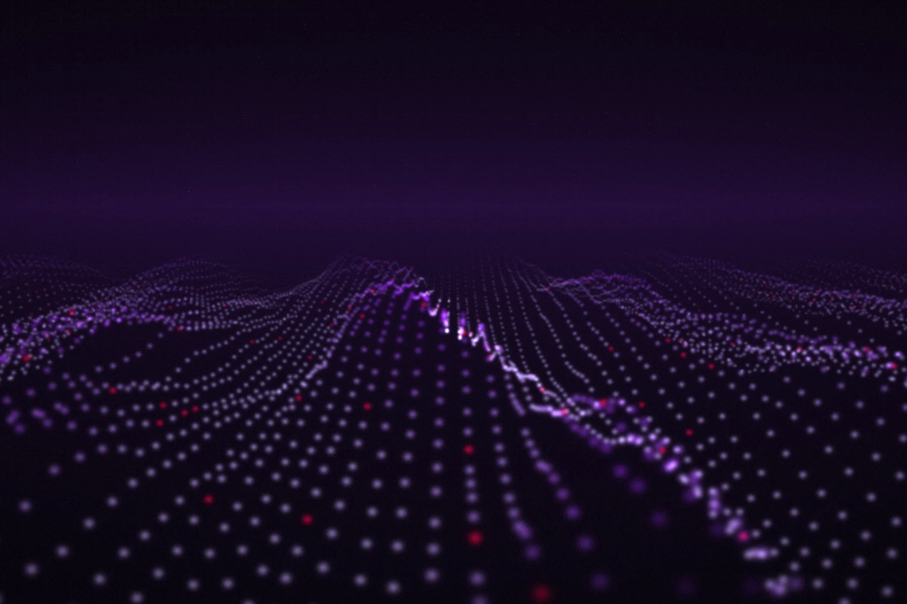
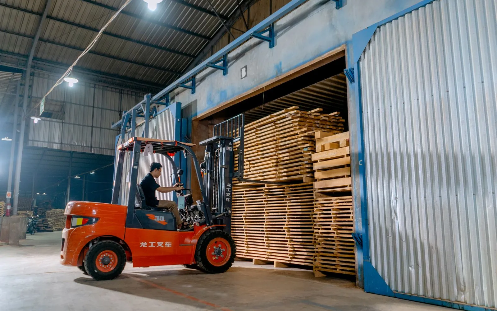

Service 02 · AI-First Software Engineering
Your next release ships with a team of agents.
Evoke integrates specialist AI agents into your SDLC for both modern and legacy systems — while your teams retain full control over architecture, compliance and releases.
Impact
Outcomes you can measure.
Numbers from delivery programs in this service line.
Approach
Two paths. One engine.
The same agent pipeline powers both — tuned for the problem you’re solving.
Greenfield · Build new
Net-new products, shipped at agent speed.
From idea to production without the usual sprint overhead — agents parallelise UI, APIs, tests and docs while your architects steer.
- Requirements to working code in weeks, not months
- Agents generate UI, APIs, tests and docs in parallel
- Humans steer architecture, UX and business rules
- Governance and observability built in from day one
Digital products · MVPs · Platform expansions · SaaS applications
Brownfield · Modernization
Agents decode, translate and validate decades of legacy.
No specialist bottlenecks. No compliance compromise. Mainframe, monolith or messy front-end — all in scope.
- Legacy source analysed, re-platformed and re-tested autonomously
- COBOL, VB.NET, ExtJS, mainframe and monoliths — all in scope
- Dual-engine validation, auto-fix loops and full audit trails
- Eliminates dependency on scarce senior SMEs
Legacy migration · UX modernization
Capabilities
What’s inside this orbit.
Code generation
Specialist agents produce code, APIs, UI and rules simultaneously.
Legacy comprehension
Agents map business rules buried in decades-old code into a skills library.
Self-healing validation
Up to 3 automatic fix cycles before a human ever reviews.
Test automation
Unit, integration and regression suites generated alongside the code.
Strangler-fig cutover
Old and new run side by side, route by route, with zero downtime.
Traceable releases
Every change linked to its requirement, test and approval.
The agentic pipeline
Evoke agentic modernization accelerator.
Specialist agents hand off cleanly between stages. Select a stage to see what happens.
stages · 1 engine
Auto-advancing — select any stage to take control
Client story
Insights behind the success.

Manufacturing · GlobalLift-truck manufacturer turns 453,958 support tickets into self-service answers.
A grounded AI assistant answers dealer questions in 30–60 seconds, with a source reference on every answer.
Ready when you are
Ready to steer your next release?
A scoped proposal, a realistic timeline and references from clients in your sector. No pitch decks.
Talk to an architect